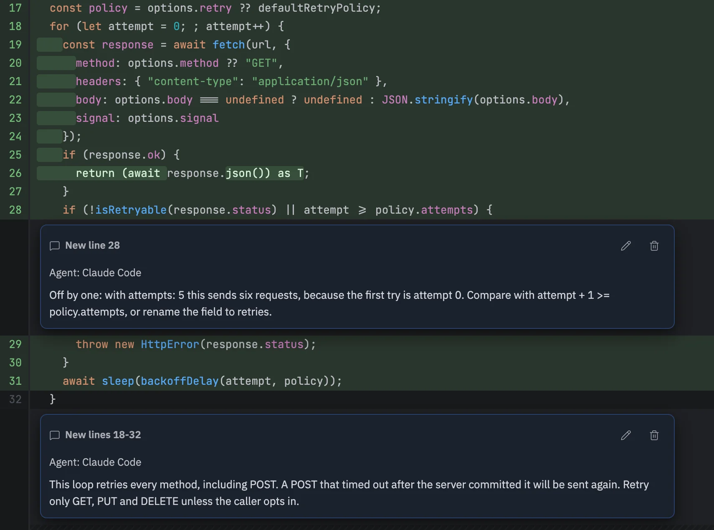
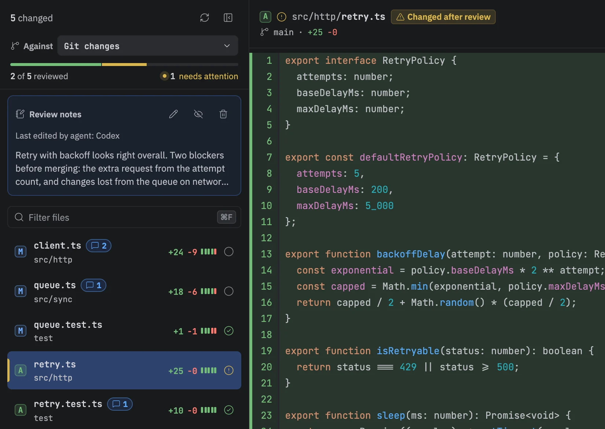
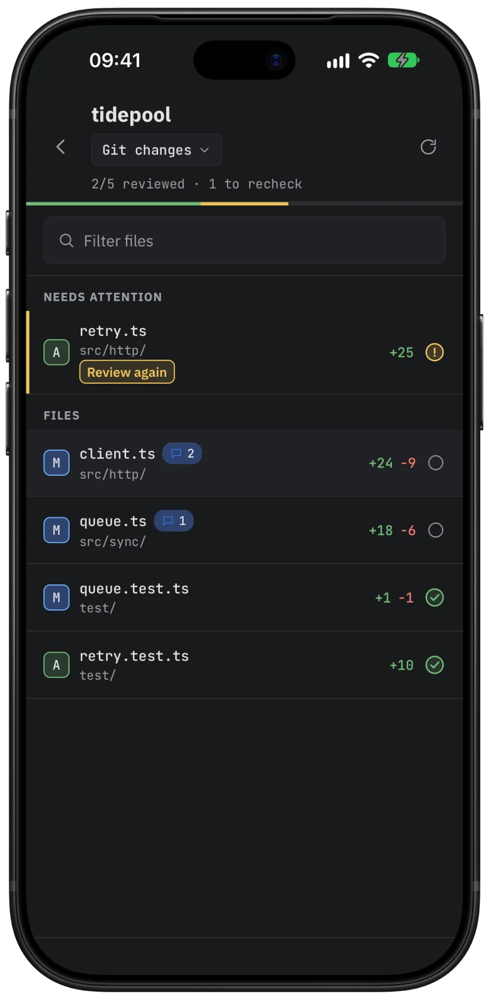
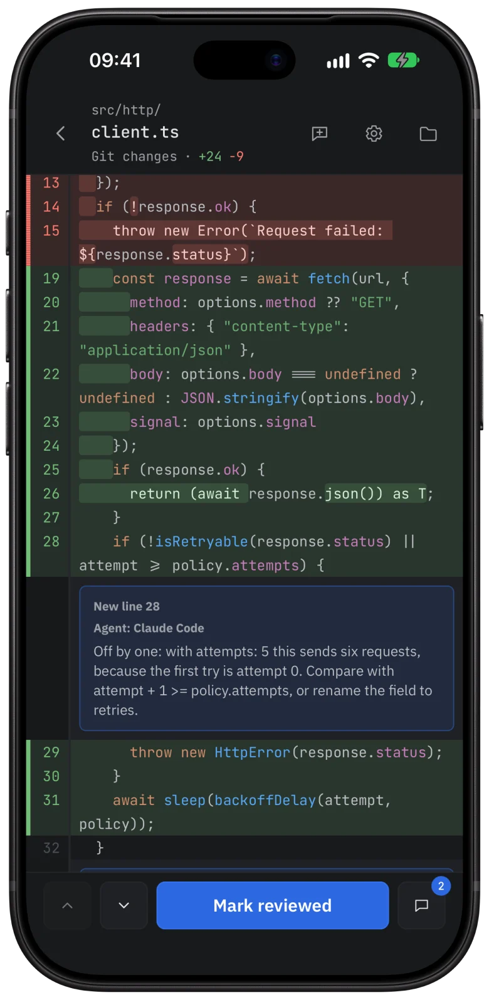

Review the diff with your agent.
Difftray is a Mac app for reviewing local Git changes, yours or an agent's. Mark files reviewed, leave comments, and Difftray flags any file that changes after you looked. Connect the coding agent you already use and the comments go both ways: it reads yours, fixes the code and writes its own review back.
› /difftray-review
$ difftray open .
tidepool · working tree
$ difftray review inspect --json
context ctx_182a · 5 files · 0 comments
$ difftray review file --context $ctx --path src/http/client.ts
$ difftray review file --context $ctx --path src/sync/queue.ts
$ difftray feedback submit --context $ctx --input review.json
4 comments written as Claude Code


A real Difftray window on a demo repository. The terminal replays, abridged, the commands the /difftray-review skill runs.
Works with the agent you already run: Claude Code Codex Pi or any agent that reads a skills folder. Difftray does not include or run an agent.
Comments go both ways.
You leave comments on a line, a range, a file or the whole change. Your agent reads every one through the difftray command-line tool bundled in the app. It can also review the diff itself and write comments back, labelled with its name, so you can see who wrote what.
/difftray-openOpens the current worktree in Difftray and keeps the diff you had selected.
Nothing/difftray-readReads all of your feedback and summarizes it.
Nothing/difftray-fixFixes the code for each open comment and reports what it changed.
Code only/difftray-reviewReviews the diff and submits its findings in one batch.
Comments only/difftray-labelGives the worktree a readable name in Difftray.
The labelInstall once
Open Settings › Agents and press Install next to Claude Code, Codex or Pi, whichever you already use. The skill updates with the app.
Nothing runs on its own
Loading the skill writes nothing. The agent edits code or comments only when you type the command.
Prefer copy and paste?
Copy for agent puts every comment on the clipboard as a prompt for any tool.
Reviewed means this exact diff.
Agents keep editing after you look. Difftray remembers the diff you marked as reviewed and compares it on every change, so a file never stays reviewed after it moves.
Reviewed. Press R to mark the file and move to the next one.
Changed after review. The agent edited the file again. Difftray marks it in the file list and above the diff.
Not reviewed. The progress bar counts what is left in each project.




Read the review away from your desk.
Difftray Companion pairs with the Mac app. Read diffs, mark files reviewed and answer the agent's comments from the couch, then pick up at the Mac where you left off.
The companion is free for one project. Difftray Pro unlocks every project with a yearly subscription or a one-time purchase.
Nothing goes through a server. The phone talks to your Mac over Wi-Fi or Tailscale on an end-to-end encrypted channel.
Pairing takes a minute. Scan the QR code in Settings › Companion on the Mac.
Built for your own reviews too.
- R
- Marks the file reviewed and opens the next one.
- ↑↓
- Moves through the file list without the mouse.
- ⌘P
- Opens any file by name, which helps in large changes.
- ⌘F
- Filters the file list by path.
- Projects
- Every repository and worktree opens in one window, and each tab shows its own progress.
- Targets
- You can review the working tree, a branch against its base, or a single commit.